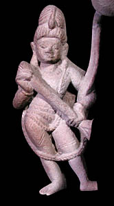

RamachandraThe seventh incarnation of Vishnu was a human being named Ramachandra. Ramachandra was born a prince and is commonly known as Rama. He has a magical weapon given to him by a sage. 
Vishnu was sent to earth as Ramachandra to fight against a very powerful demon. The demon was a king named Ravana who had ten heads. As a young prince Rama showed his strength by breaking the bow of Shiva to win the princess Sita's hand in marriage. Eventually Sita was kidnapped by Ravana and taken away to his palace. Rama and his forces set out to find and rescue Sita which led to many adventures. After many epic battles between Ravana's soldiers and the forces of good, Rama finally came face to face with Ravana. He chopped off Ravana's ten heads one by one, but every time he cut a head off, another would grow in its place. Finally, he killed Ravana with a magical weapon. There are many stories about Rama's life and adventures. The stories about Rama's adventures and battles to overthrow the demon king are told in the epic Ramayana. |